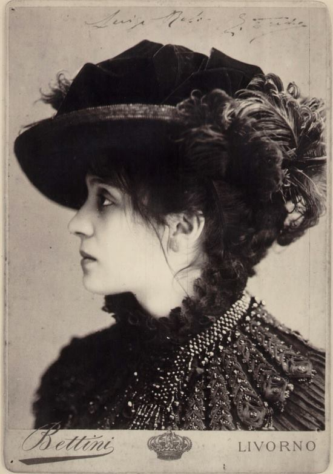

Eleonora Duse
Eleonorę Duse, sławną włoską aktorkę, poznał Rilke osobiście latem roku 1912 w Wenecji. „Byliśmy jak para, co bierze udział w jakowymś misterium dawnym, a każde z nas mówi swą cichą rolę, jakby z nakazu legendy” — pisał poeta w liście do księżnej Marie von Thurn und Taxis.
Eleonora Duse jako Odetta, rok 1885, Foto Bettini, Bilbioteca e Museo Teatrale del Burcardo, Rzym
„Dobrze znałam Duse. Bywały chwile, kiedy odkrywała przede mną swe serce. Istota cudowna, wyjątkowa, niemniej… była desperatką. Schorowaną, starzejącą się, głęboko nieszczęśliwą kobietą” — wspomina po latach księżna Taxis na kartach swych pamiętników.